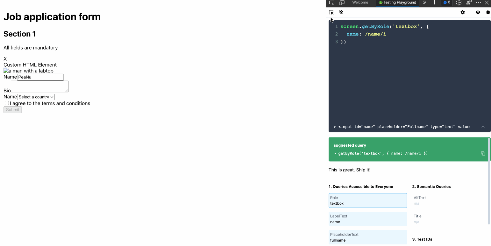
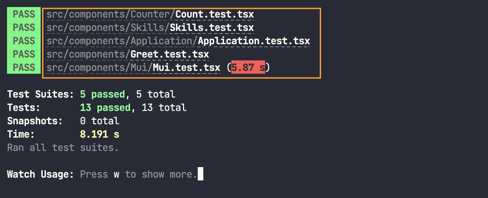
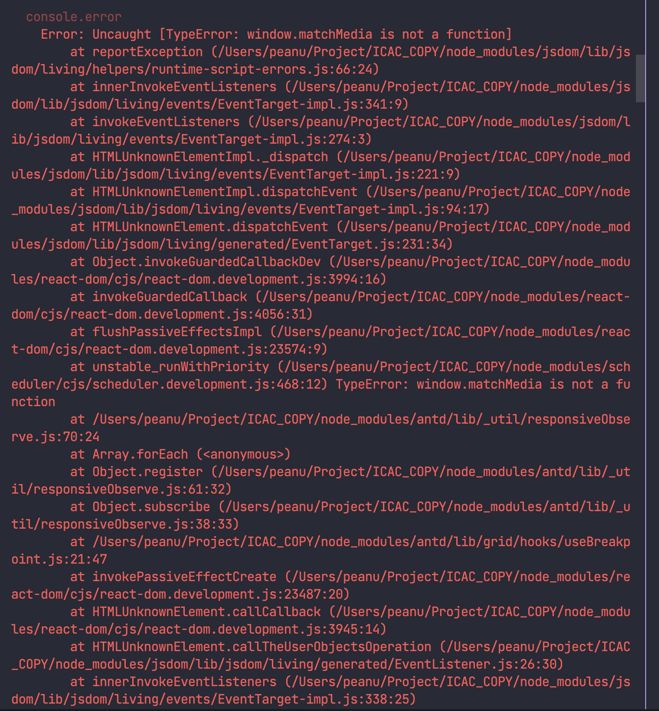

以前總認為寫測試很麻煩，最近才慢慢體會到測試是一項很重要的技能。
關於 Jest 與 React Testing Library Jest 一個用來執行測試的 Runner ，它能夠自動找出該被測試的檔案並執行測試，並把測試結果轉換成好閱讀的結果。
React Testing Library (RTL) 讓 JavaScript 可以透過 Virtual DOM 的方式來測試 React Component。
Testing Library 其實是一套集結各種 UI 元件的測試庫，所以 React 只是這個家族中的其中一個項目。
背後運作的核心是「DOM Testing Library」，而 RTL 只是把這些東西包裝起來讓我們使用起來更方便一點。
各種測試套件
如果是用 CRA 來建立專案的人，CRA 會在建立時自動安裝好這些套件和設定，不需要額外處理就能開始寫測試囉。
setupTests.ts 如果是用 CRA 建立環境的話應該能在根目錄看到這個檔案，內容是這樣：
1 2 3 4 5 import '@testing-library/jest-dom'
以 CRA 的例子來說是用來把 jest-dom 提供的 matcher 給引入到 jest，讓我們寫測試的能夠時使用那些額外的 matcher。
原理的話很簡單，就是在 jest 執行以前會先執行 setupTests.ts 的內容，所以 jest 自然可以看懂那些額外的 matcher。
Jest watch mode CRA 預設開啟 watch mode，watch mode 的用途是執行 test 時只會對上次 commit 後有被修改的檔案做測試，避免花很多時間跑不相關的測試。
Filename Convention 以 Jest 來說的話會分成底下幾個：
.test.js（檔案）.spec.js（檔案）__tess__（資料夾）
比較常見的做法是把測試檔案放在原檔案的隔壁，這樣就可以用最短的 import 路徑來引入，要找測試檔案的時候也比較好找。
基本結構 一個 Test 會包含三個要素：
Arrange（佈置，簡單來說就是把 component 渲染出來）
Action（動作）
Assertion / Expect（斷言）
範例：
1 2 3 4 5 6 7 8 9 test('if user inputted amount and note fields, the buttons become enabled. ' , async () => { render(<TransactionCreateStepTwo sender ={{ id: '5 ' }} receiver ={{ id: '6 ' }} /> userEvent.type(screen.getByPlaceholderText(/amount/i ), '50' ) userEvent.type(screen.getByPlaceholderText(/add a note/i ), 'This is good for you.' ) expect(await screen.findByRole('button' , { name : /pay/i })).toBeEnabled() })
這段測試是當使用者輸入必填欄位後，提交按鈕應該要被 enabled。
Jest matcher 當我們用 expect(...) 建立一個 Assertion 時，都會搭配一個「matcher」來決定我們 Assertion 是否正確，舉例來說：
1 expect(element).toHaveTextContent('abc' )
這是用來檢查 element 中是否有包含 abc 的內容。後面的 toHaveTextContent 就是 matcher。
這裡列出幾個比較常用到的 matcher：
toHaveTextContent 元素的文字內容toBeInTheDocument 元素有出現在 DOMnot.toBeInTheDocument 文字沒有出現在 DOM
這邊講的 matcher 多數是來自 jest-dom ，如果你想查 jest 自己的 matcher 可以參考 Jest 的官方文件 。
Jest API
describe() 把一群 test 給 group 起來test.only() 忽略掉目前檔案中的其他測試，只執行 only 這個 case。test.skip() 忽略掉這個 case。
Jest Mock 一個 mock function 可能有很多種寫法，所以這邊簡單介紹幾個比較容易搞混的種類。
1. jest.fn() 與 jest.fn().mockImplementation
這兩個其實是等價的東西，只是如果你是寫 TypeScript 的話我覺得前者會比較方便一點：
1 2 3 4 5 6 7 8 9 10 11 12 13 describe('Mock compare' , () => { test('mock function 1' , () => { const mockFn = jest.fn((value: string ) => value) console .log(mockFn('Hello' )) }) test('mock function 2' , () => { const mockFn = jest.fn().mockImplementation((value: string ) => value) as jest.MockedFunction< (value: string ) => void > console .log(mockFn('Ha Ha Ha' )) }) })
2. jest.fn(() => ...) 與 jest.fn().mockReturn...()
這兩個也是差不多的東西，但在不關心參數的情況下我會建議用 mockReturn... 來處理：
1 2 3 4 5 6 7 8 9 10 11 12 describe('Mock compare' , () => { test('mock function 1' , () => { const mockFn = jest.fn(() => true ) console .log(mockFn()) expect(mockFn).toBeCalledTimes(1 ) }) test('mock function 2' , () => { const mockFn = jest.fn().mockReturnValue(false ) console .log(mockFn()) expect(mockFn).toBeCalledTimes(1 ) }) })
而當你關心參數時則會用 jest.fn(() => ...) 搭配 toBeCalledWith 來測試傳入的參數是否正確：
1 2 3 4 5 test('mock function call with right args' , () => { const mockFn = jest.fn((value: boolean ) => value) mockFn(true ) expect(mockFn).toBeCalledWith(true ) })
所以我覺得這兩個的差別在於用途，當你只在意回傳值的時候會用 mockReturn...，在意參數的時候會用 jest.fn(() => ...)。
只想 mock 一部分的內容 假設我們現在有一個 module 的內容長這樣：
1 2 3 4 5 6 7 8 9 10 export function getName (string return 'PeaNu' } export function getAge (number return 20 } export const person = { name : 'PeaNu' , age : 20 }
然後 component 的內容如下：
1 2 3 4 5 6 7 8 9 10 11 12 13 14 import { getAge, getName, person } from './utils' export const Module = () => { console .log('person' , person) console .log('getName' , getName()) console .log('getAge' , getAge()) return ( <div > <h2 > Module Test</h2 > </div > ) }
接著，如果我想要 mock 的只有 getName，那可以這樣寫：
1 2 3 4 5 6 7 8 9 10 11 12 13 14 15 16 17 import { render } from '@testing-library/react' import { Module } from './Module' jest.mock('./utils' , () => { return { ...jest.requireActual('./utils' ), getName : jest.fn(() => 'ABC' ) } }) describe('Module' , () => { test('render correctly' , () => { render(<Module /> }) })
附註：就跟你在修改 Object 的特定 property 的概念很像。
出來的結果如下：
眼尖的話會注意到 module 中有一個 person，這是要做什麼用的？
這是想示範如果你只想修改 person 中的指定屬性的話，甚至可以這樣做：
1 2 3 4 5 6 7 8 9 10 11 12 13 14 15 16 17 18 19 20 21 22 import { render } from '@testing-library/react' import { Module } from './Module' jest.mock('./utils' , () => { return { ...jest.requireActual('./utils' ), person : { ...jest.requireActual('./utils' ).person, name : 'PPB' }, getName : jest.fn(() => 'ABC' ) } }) describe('Module' , () => { test('render correctly' , () => { render(<Module /> }) })
出來的結果如下：
總之，這一段只是想介紹 jest.mock 的 factory 功能，詳細可以參考官方文件的這段
RTL－Query 一般在對 React Component 寫測試的時候，我們會有一個「Query（查詢）」動作，像這樣：
1 2 3 4 5 6 test('renders correctly !!' , () => { render(<Greet /> const element = screen.getByText(/hello/i ) expect(element).toBeInTheDocument() })
以 RTL 的 convention 來說，要查詢單一元素的 query 有這些：
多個元素的話：
getAllBy…queryAllBy…findAllBy…
要注意的幾件事：
findBy 一定要搭配 async await 使用查詢單一元素的 query 如果找到多筆的話會報錯
盡量從 user 的角度去選擇適合的 query，藉此得知 a11y 的品質，詳細可以參考官方文件的 priority 段落
query 的用途 query 是用來查詢不會渲染在畫面上的元素 ，例如：
1 2 3 4 5 6 7 8 9 10 11 12 13 export const Skills: React.FC = () => { const [isLoggedIn, setIsLoggedIn] = useState<boolean >(false ) return ( <div > {isLoggedIn ? ( <button > Start Learn</button > ) : ( <button onClick ={() => setIsLoggedIn(true)}>Login</button > )} </div > ) }
這時候如果想測試第一次渲染時 Start Learn 不會出現在畫面上的話，可能會這樣寫：
1 2 3 4 5 6 test('start learn button is not rendered' , () => { render(<Skills skills ={skills} /> const buttonElement = screen.getByRole('button' , { name : /start learn/i }) expect(buttonElement).not.toBeInTheDocument() })
這樣子在跑測試的時候就會出錯，因為 getByRole 找不到那個按鈕。
所以這時候可以改用 query 的方式來查詢就不會出錯了：
1 2 3 4 5 6 test('start learn button is not rendered' , () => { render(<Skills skills ={skills} /> const buttonElement = screen.queryByRole('button' , { name : /start learn/i }) expect(buttonElement).not.toBeInTheDocument() })
之所以可以這樣做是因為當 query 找不到指定元素時會回傳的是 null（如果是 queryAll 的話會回傳 []） ，而不是直接拋出一個 Error。我們是利用這一點來通過測試的。
find 的用途 find 是用來查詢會根據 state 出現或消失的元素 ，例如：
1 2 3 4 5 6 7 8 9 10 11 12 13 14 15 16 17 18 19 20 21 22 23 24 25 26 export const Skills: React.FC<Props> = (props ) => { const [isLoggedIn, setIsLoggedIn] = useState<boolean >(false ) useEffect(() => { const timer = setTimeout (() => { setIsLoggedIn(true ) }, 500 ) return () => clearTimeout (timer) }, []) return ( <div > <ul > {props.skills.map((skill) => ( <li key ={skill} > {skill}</li > ))} </ul > {isLoggedIn ? ( <button > Start Learn</button > ) : ( <button onClick ={() => setIsLoggedIn(true)}>Login</button > )} </div > ) }
這時候會碰到「非同步更新」的問題，因此用 getBy 或 query 的話沒辦法做正確的查詢。
所以要改用 find 來處理：
1 2 3 4 5 6 7 8 9 test('start learn button is rendered after a little times' , async () => { render(<Skills skills ={skills} /> const buttonElement = await screen.findByRole( 'button' , { name : /start learn/i }, { timeout : 2000 } ) expect(buttonElement).toBeInTheDocument() })
find 會回傳一個 Promise，當 1000ms 內找到元素時，就會 resolve 這個 Promise，反之則 reject。
上面刻意加上了 { timeout: 2000 } 這個 option，只是要提醒你如果預設的 1000ms 不夠用的話可以透過 option 來改寫。
RTL－Debugging screen.debug 有時候你可能會想直接查看 DOM 元素的結構，這時候可以在測試中加上 screen.debug，RTL 會自動把 format 後的 DOM Tree 印出來：
1 2 3 4 5 6 7 8 9 10 11 test('start learn button is rendered after a little times' , async () => { render(<Skills skills ={skills} /> screen.debug() const buttonElement = await screen.findByRole( 'button' , { name : /start learn/i }, { timeout : 2000 } ) expect(buttonElement).toBeInTheDocument() })
logRoles 如果你想要查看目前 DOM 上的所有 role，可以透過 logRoles 來查詢：
1 2 3 4 5 6 7 8 9 10 11 12 13 14 15 import { render, screen, logRoles } from '@testing-library/react' test('start learn button is rendered after a little times' , async () => { const view = render(<Skills skills ={skills} /> logRoles(view.container) const buttonElement = await screen.findByRole( 'button' , { name : /start learn/i }, { timeout : 2000 } ) expect(buttonElement).toBeInTheDocument() })
之後就能用比較好讀的格式來查看所有 roles：
不過其實也可以用一個比較 tricky 的方法來做，就是用 screen.getByRole('')：
1 2 3 4 5 6 7 8 9 10 11 test('start learn button is rendered after a little times' , async () => { render(<Skills skills ={skills} /> screen.getByRole('' ) const buttonElement = await screen.findByRole( 'button' , { name : /start learn/i }, { timeout : 2000 } ) expect(buttonElement).toBeInTheDocument() })
這招是故意讓 jest 拋出錯誤，與此同時自動列出我們可以搜尋的 roles 來達到同樣的效果：
testing-playground 一個讓你用 UI 來產生對應的 RTL Query 的擴充套件，用起來會像這樣：

只要選取想要的那個元素它就會自動產生適合的 query 給你，還蠻方便的。
RTL－Event 當你想要針對「事件」來做測試時會用到 @testing-library/user-event 來處理。
比較需要注意的地方是 v13 跟 v14 的寫法不太一樣，所以這邊示範一下。
在 v13 的寫法是這樣：
1 2 3 4 5 6 7 test('the count should become 1 after user click the button' , () => { render(<Counter /> const titleElement = screen.getByRole('heading' ) const btnElement = screen.getByRole('button' ) userEvent.click(btnElement) expect(titleElement).toHaveTextContent('1' ) })
附註：使用者按下按鈕後數字應該從 0 變成 1
在 v14 的寫法是這樣：
1 2 3 4 5 6 7 8 test('the count should become 1 after user click the button' , async () => { userEvent.setup() render(<Counter /> const titleElement = screen.getByRole('heading' ) const btnElement = screen.getByRole('button' ) await userEvent.click(btnElement) expect(titleElement).toHaveTextContent('1' ) })
在 v14 中要用 userEvent 必須先執行 setup，並且 userEvent 變成是了非同步的 Promise ，所以要搭配 async await 來使用。
RTL－對 Provider 中的元件測試 一般來說我們在寫 React 的時候都會用 Provider 來包住整個元件，像這樣：
1 2 3 4 5 6 7 8 9 10 11 12 13 14 15 import { Mui } from 'components/Mui/Mui' import { AppProvider } from 'provider/AppProvider' import './App.css' function App ( return ( <AppProvider > <div className ='App' > <Mui /> </div > </AppProvider > ) } export default App
這裡的示範是用 Mui 提供的 theme 功能來讓預設的模式是「dark mode」，所以會用一個 Provider 來包住底下的所有元素。
不用太在意 AppProvider 的內容是什麼，只要知道我們需要這個 Provier 來讓 dark mode 能夠正常運作就好了。
然而當我們測試想測試 <Mui> 時，可能會寫出這樣的西：
1 2 3 4 5 6 7 8 9 import { Typography } from '@mui/material' import { useTheme } from '@mui/material/styles' export const Mui = () => { const theme = useTheme() return <Typography component ='h1' > {theme.palette.mode} mode</Typography > }
1 2 3 4 5 6 7 test('renders correctly' , () => { render(<Mui /> const headingElement = screen.getByRole('heading' ) expect(headingElement).toHaveTextContent(/dark/i ) })
注意 render 的內容只有 <Mui>，並沒有 Provier，所以這段測試是不會通過的。
你可能會想說「那我直接在 <Mui> 外面包一層 <AppProvider> 不就好了？」。這樣子確實可行，但這樣就沒有那麼 unit 了，所以一般會推薦這樣做：
1 2 3 4 5 6 7 8 test('renders correctly' , () => { render(<Mui /> wrapper : AppProvider }) const headingElement = screen.getByRole('heading' ) expect(headingElement).toHaveTextContent(/dark/i ) })
這樣 jest 就會自動在背後補一層 Provider，就能正確的測試了。
客制化 render function 以上面的例子來說，如果我想測試的東西都需要用到 Provider 的話，我就得在每一個 render 中都加入 wrapper 這個 option，其實有點麻煩對吧？
要解決這個問題，可以參考 官方文件 。裡面有教你如何針對 render 做客製化，這樣之後在用的時候就會方便許多。
現在拿剛剛的例子來改寫一下。首先，我們建立一個新的檔案，並寫入底下的內容：
1 2 3 4 5 6 7 8 9 10 11 12 13 14 import { ReactElement } from 'react' import { render, RenderOptions } from '@testing-library/react' import { AppProvider } from 'provider/AppProvider' function customRender (ui: ReactElement, options?: Omit<RenderOptions, 'wrapper' > ) render(ui, { wrapper : AppProvider, ...options }) } export * from '@testing-library/react' export { customRender as render }
附註：其實就是把原本的 render 用 customRender 包裝後再輸出，搭配註解想一下應該不難理解。
然後再把剛剛的測試的內容改寫成這樣：
1 2 3 4 5 6 7 8 9 import { render, screen } from 'test.utils' import { Mui } from './Mui' test('renders correctly' , () => { render(<Mui /> const headingElement = screen.getByRole('heading' ) expect(headingElement).toHaveTextContent(/dark/i ) })
這樣子就不用在每一個地方都加上 wrapper 來處理了，真的方便許多！
RTL－對 custom hook 做測試 假設我有一個 custom hook 如下：
1 2 3 4 5 6 7 8 9 10 11 12 13 14 15 16 17 18 19 20 import { useState } from 'react' interface Props { initialCount?: number } export function useCounter ({ initialCount = 0 }: Props = {} ) const [count, setCount] = useState<number >(initialCount) function increment ( setCount(count + 1 ) } function decrement ( setCount(count - 1 ) } return { count, increment, decrement } }
附註：關於 Props = {} 的細節可以參考這裡
就是一個很基本的 counter 而已，但現在要對這個 custom hook 測試的話會先碰到幾個問題：
沒辦法用 render 來渲染，因為 custom hook 並不包含 jsx
沒辦法直接在測試中呼叫 custom hook，因為 hook 只能在 component 中被呼叫
關於這一點 RTL 已經先幫你想好了，所以它提供了 renderHook 來讓你使用：
1 2 3 4 5 6 7 8 9 import { renderHook } from '@testing-library/react' test('if not recieve props, initial count should be 0' , () => { const { result } = renderHook(useCounter) expect(result.current.count).toBe(0 ) })
如果要對 custom hook 傳入參數的話，可以這樣子寫：
1 2 3 4 5 6 7 8 9 10 11 12 import { renderHook } from '@testing-library/react' test('if recieve props, initial count should be that value' , () => { const count = 10 const { result } = renderHook(useCounter, { initialProps : { initialCount : count } }) expect(result.current.count).toBe(count) })
所以透過 renderHook 就可以對 custom hook 來做測試。
當測試會改變 state 時，需搭配 act 使用 當我們想要測試 custom hook 中的 function 時，可能會很直覺的這樣寫：
1 2 3 4 5 6 7 8 import { renderHook } from '@testing-library/react' test('if increment is invoked, count should increase by 1' , () => { const { result } = renderHook(useCounter) result.current.increment() expect(result.current.count).toBe(1 ) })
接著就會看到這段錯誤訊息：
簡單來說，當我們執行 expect(...) 當下的那個 state 還不是更新以後的值 ，如果要讓確保 expect(...) 當下的 state 是最新的，要用 act 來包住更新 state 的 function：
1 2 3 4 5 6 7 8 9 import { act, renderHook } from '@testing-library/react' test('if increment is invoked, count should increase by 1' , () => { const { result } = renderHook(useCounter) act(() => result.current.increment()) expect(result.current.count).toBe(1 ) })
改寫成這樣以後就能確保 expect(...) 拿到的 state 會是最新的那一個。
RTL－利用 mock function 來測試 以前在 一個做 Unit test 可能會用到的方法 有大概介紹過 mock function 的定義和用途，在 React 也有機會用到這個功能。
底下是要示範的例子：
1 2 3 4 5 6 7 8 9 10 11 12 13 14 15 interface Props { count : number onIncrement?: () => void onDecrement?: () => void } export const Counter2: React.FC<Props> = (props ) => { return ( <div > <h1 > Count: {props.count}</h1 > {props.onIncrement && <button onClick ={props.onIncrement} > Increment</button > } {props.onDecrement && <button onClick ={props.onDecrement} > Decrement</button > } </div > ) }
接下來，當我們想測試 onIncrement 和 onDecrement 的時候，會碰到一個問題是：該如何測試這兩個 function？
雖然這問題聽起有點奇怪，但你可以想一件事情。從 Counter2 的角度來思考的話，它的關注點並不會是這兩個 function 的內部的細節，畢竟我可以在 onIncrement 中把 count 加上 1，也可以加上 100，或其他各種可能；onDecrement 也是同理。
所以，Counter2 該關注的地方其實是：
這兩個 function 有沒有在在 onClick 的時候順利的被執行。
儘管這兩個 function 有可能因為本身邏輯沒寫好的關係導致程式出錯，但那都跟 Counter2 沒有直接的關係。
在知道關注點以後，你可能會這樣寫測試：
1 2 3 4 5 6 7 8 9 10 11 12 13 14 15 16 17 18 19 20 test('handlers are invoked correctly' , async () => { function incrementHandler ( function decrementHandler ( render(<Counter2 count ={10} onIncrement ={incrementHandler} onIncrement ={decrementHandler} /> const incrementBtn = screen.getByRole('button' , { name : /increment/i }) const decrementBtn = screen.getByRole('button' , { name : /decrement/i }) await userEvent.click(incrementBtn) await userEvent.click(decrementBtn) expect(incrementHandler).toBeCalledTimes(1 ) expect(decrementHandler).toBeCalledTimes(1 ) })
但會看到這段錯誤：
簡單來說 jest 會規定你用它提供 mock function 來處理這段測試，所以會改寫成這樣：
1 2 3 4 5 6 7 8 9 10 11 12 13 14 15 16 test('handlers are invoked correctly' , async () => { const incrementHandler = jest.fn() const decrementHandler = jest.fn() render(<Counter2 count ={10} onIncrement ={incrementHandler} onDecrement ={decrementHandler} /> const incrementBtn = screen.getByRole('button' , { name : /increment/i }) const decrementBtn = screen.getByRole('button' , { name : /decrement/i }) await userEvent.click(incrementBtn) await userEvent.click(decrementBtn) expect(incrementHandler).toBeCalledTimes(1 ) expect(decrementHandler).toBeCalledTimes(1 ) })
所以碰到類似這種情況時可以用 mock function 來解決。
RTL－搭配 MSW 測試 HTTP Request 在寫任何應用時一定會碰到 HTTP Request 的需求，這時候的測試得方式也會跟以往不太一樣，會相對複雜一些。
先來看這次的範例：
1 2 3 4 5 6 7 8 9 10 11 12 13 14 15 16 17 18 19 20 21 22 23 24 25 26 27 28 29 30 31 32 33 34 35 36 37 38 import { useEffect, useState } from 'react' export const User = () => { const { users, error } = useUsers() return ( <div > <h1 > User</h1 > {error && <p > {error}</p > } <ul > {users.map((user) => ( <li key ={user} > {user}</li > ))} </ul > </div > ) } function useUsers ( const [users, setUsers] = useState<string []>([]) const [error, setErorr] = useState<null | string >(null ) useEffect(() => { fetch('https://jsonplaceholder.typicode.com/users' ) .then(async (response) => { if (!response.ok) { return Promise .reject(await response.json()) } return response.json() }) .then((users: any [] ) => setUsers(users.map((user ) => user.name))) .catch((err: any ) => setErorr(err.errorMessage)) }, []) return { users, error } }
這個範例是串接 jsonplaceholder 的 API，邏輯上應該不會太複雜，只是把抓到的 user 顯示在畫面上，失敗的話就顯示錯誤訊息。
那接下來該如何對這段 HTTP Request 做測試呢？在開始之前要先釐清一個觀念：
在包含 API 的單元測試中，我們只能用 mock 的方式去模擬 API 的運行。想要完整的測試 API + App 本身，那該做的是 E2E 測試而不是單元測試。
畢竟 API 相關的事情會牽涉到 server，對單元測試來說這個 scope 太廣了，所以慣例上會自己 mock 一個 api server 出來做測試，也就是等一下要介紹的套件：Mock Service Worker (MSW)
安裝與配置 MSW msw 是一個用來模擬 API 的套件，只要用跟 express 類似的語法就能快速建起一個 API server，並且在真正的 request 送出以前透過「攔截」的方式來取代原本的 request。
1. 安裝 MSW
1 2 3 npm install msw --save-dev # or yarn add msw --dev
2. 建立配置檔案
1 2 3 4 5 6 7 8 9 10 ├── src │ ├── components │ │ └── User │ │ ├── User.test.tsx │ │ └── User.tsx │ ├── mocks <- 這個 │ │ ├── handlers.ts <- 這個 │ │ └── server.ts <- 這個 ├── tsconfig.json └── yarn.lock
handlers.ts 是用來設定 mock 的 API 處理，內容會是這樣：
1 2 3 4 5 6 7 8 9 10 11 import { rest } from 'msw' export const handlers = [ rest.get('https://jsonplaceholder.typicode.com/users' , (req, res, ctx ) => { return res(ctx.status(200 ), ctx.json([{ name : 'PeaNu' }, { name : 'PPB' }, { name : 'Ariana' }])) }) ]
稍微解釋一下這裡的原理，設定這隻檔案的用意是當我們在 User.tsx 去對 jsonplaceholder 發出 GET 請求時，msw 會先檢查 handlers 中是否有對應的 API，若有的話就會攔截下來丟給 handlers 處理。也就是說 API 實際上不會發送到 jsonplaceholder 那邊，而是 msw 的 handler。
server.ts 是用來設置 server 的地方：
1 2 3 4 5 import { setupServer } from 'msw/node' import { handlers } from './handlers' export const server = setupServer(...handlers)
3. 設置 setupTest.ts hooks
除了設定 server 以外，我們也得對 jest 本身做一些調整，否則它不會知道我們有 mock 一個 server 給元件使用：
1 2 3 4 5 6 7 8 9 10 11 12 13 14 15 import '@testing-library/jest-dom' import { server } from './mocks/server' beforeAll(() => server.listen()) afterEach(() => server.resetHandlers()) afterAll(() => server.close())
其實就是在不同時間點做一些設定而已：
beforeALl：在測試執行之前，架好 server 的 lstenerafterEach：單一個 test 跑完時，重設 handler 避免互相干擾afterAll：所有測試跑完後，關閉 server
這邊只是做一個全域設定來省掉一些麻煩而已。
撰寫測試 msw 設定好之後就可以開始來寫測試了，直接來看 code：
1 2 3 4 5 6 7 8 9 10 11 12 13 14 15 16 17 18 19 20 21 22 describe('Users' , () => { test('renders list of items' , async () => { render(<User /> const listItem = await screen.findAllByRole('listitem' ) expect(listItem).toHaveLength(3 ) }) test('renders error message' , async () => { const errorMessage = 'System Internal Error.' server.use( rest.get('https://jsonplaceholder.typicode.com/users' , (req, res, ctx ) => { return res(ctx.status(500 ), ctx.json({ errorMessage })) }) ) render(<User /> const error = await screen.findByText(errorMessage) expect(error).toBeInTheDocument() }) })
這邊同時測試了成功和失敗的結果。
首先成功的部分就跟平常的測試差不多，因為前面有做好設定了所以 jest 會自動去讓 mock server 攔截 <User /> 中的 request。
至於失敗的部分也要做一些調整，因為我們沒辦法讓單一個 handler 同時處理成功和失敗，所以這邊的做法是直接在測試中寫另一個 handler 來拋出 500 erorr，這樣子就可以一次做兩種測試了。
RTL－另一種測試 HTTP Request 的方式 前面有介紹怎麼用 msw 套件來測試 HTTP Request，但如果你沒有想要那麼直接模擬 server 的特性（像是會回傳 HTTP status code、等待回傳的時間等等）。那其實不一定要利用 msw 來建一個模擬 server 做測試，只要用 jest 提供的 mock function 就行了。
來看一個實際的例子。
getUser.ts：
1 2 3 4 5 6 7 export async function getUser ( return await fetch('https://jsonplaceholder.typicode.com/users/' ) .then((response ) => response.json()) .then((data ) => data) .catch((error ) => error) }
Users.tsx：
1 2 3 4 5 6 7 8 9 10 11 12 13 14 15 16 17 18 19 20 21 22 23 24 25 26 27 28 29 import { useEffect, useState } from 'react' import { getUser } from './getUser' function Users ( const [users, setUsers] = useState<any []>([]) const [errorMessage, setErrorMessage] = useState<null | string >(null ) useEffect(() => { getUser() .then((users ) => setUsers(users)) .catch((error ) => setErrorMessage(error.message)) }, []) return ( <div className ='App' > <h2 > Users:</h2 > <ul > {users.map((user: any) => ( <li key ={user.name} > {user.name}</li > ))} </ul > {errorMessage && <p > {errorMessage}</p > } </div > ) } export default Users
Users.test.tsx：
1 2 3 4 5 6 7 8 9 10 11 12 13 14 15 16 17 18 19 20 21 22 23 24 25 26 27 28 29 30 import { render, screen } from '@testing-library/react' import { getUser } from './getUser' import Users from './Users' jest.mock('./getUser' ) const mockGetUser = getUser as jest.MockedFunction<typeof getUser>test('call api correctly' , async () => { const response = [{ name : 'Leanne Graham' }, { name : 'Ervin Howell' }] mockGetUser.mockResolvedValueOnce(response) render(<Users /> expect(mockGetUser).toHaveBeenCalledTimes(1 ) const listItem = await screen.findAllByRole('listitem' ) expect(listItem).toHaveLength(2 ) screen.debug() }) test('call api failed' , async () => { const message = 'System Internal Error' mockGetUser.mockRejectedValueOnce(new Error (message)) render(<Users /> expect(mockGetUser).toHaveBeenCalledTimes(1 ) const errorText = await screen.findByText(message) expect(errorText).toBeInTheDocument() screen.debug() })
測試結果一（fetch 成功）：
測試結果二（fetch 失敗）：
還蠻簡潔的對吧？不過缺點就是沒那麼接近實際的 server 而已，因為不會有實際去打 API 的行為發生。
jest.mock 的用法 如果剛剛的範例你看得懂的話可以無視這一段，這段是想更深入解釋一下 mock 的用法，因為我自己當初在這邊還卡蠻久的 QQ
這邊會介紹的方法有底下幾個：
來看這次的範例：
1 2 3 4 5 6 7 8 9 10 11 export function getCount (Promise <string | number > return new Promise ((resolve, reject ) => { setTimeout (() => { const count = Math .random() * 10 if (count > 5 ) { return reject('Faild' ) } return resolve(count) }, 500 ) }) }
只是個 0.5 秒後會回傳數字，但有機率失敗的例子。
假設說我們現在想要 mock 這個 function 的話，可以這樣子寫：
1 2 3 4 5 6 7 8 9 10 11 12 13 14 15 16 17 18 19 20 21 22 23 24 25 26 27 28 29 30 import { getCount } from './getCount' jest.mock('./getCount' ) const mockGetCount = getCount as jest.MockedFunction<typeof getCount>test('should receive correctly value' , async () => { const response = 50 mockGetCount.mockResolvedValue(response) const count = await mockGetCount() expect(count).toBe(response) }) test('should receive error' , async () => { const response = 'Ooops' mockGetCount.mockRejectedValue(new Error (response)) let errorMessage: string await mockGetCount() .catch((error ) => (errorMessage = error.message)) .finally(() => expect(errorMessage).toBe(response)) })
雖然用了很懶人的註解法來解釋，不過我覺得以這個範例來說應該不難理解。如果還是有疑問的話建議到上面的官方文件連結點進去看一下每一個 method 大概在幹嘛應該會更清楚一點。
問題集 當你的 api function 比較複雜時的 mock 方式 由於我自己工作上的專案要打的 API 數量非常之多，所以 call api 的 method 不會是那種像 getUser 的單一個項目來處理，而是會包裝 Object 或 OOP 的形式，像這樣子：
1 2 3 4 5 6 7 8 9 10 11 12 13 14 15 16 17 export function User ( async function getAll ( return await fetch('https://jsonplaceholder.typicode.com/users/' ) .then((response ) => response.json()) .then((data ) => data) .catch((error ) => error) } async function getSingle (id: number ) return await fetch('https://jsonplaceholder.typicode.com/users/' + id) .then((response ) => response.json()) .then((data ) => data) .catch((error ) => error) } return { getAll, getSingle } }
或是這樣子（class 寫法）：
1 2 3 4 5 6 7 8 9 10 11 12 13 14 15 export class User static asnyc getAll ( return await fetch('https://jsonplaceholder.typicode.com/users/' ) .then((response ) => response.json()) .then((data ) => data) .catch((error ) => error) } static async getSingle (id: number ) return await fetch('https://jsonplaceholder.typicode.com/users/' + id) .then((response ) => response.json()) .then((data ) => data) .catch((error ) => error) } }
這兩種 mock 的寫法等一下都會介紹，這裡來看第一種的解法。
首先如果是第一個 api，那在 component 中使用的方式應該會是這樣：
1 2 3 4 5 6 7 8 9 10 11 12 13 14 15 16 17 18 19 20 21 22 23 24 25 26 27 28 29 function Users ( const user = User() const [users, setUsers] = useState<any []>([]) const [errorMessage, setErrorMessage] = useState<null | string >(null ) useEffect(() => { user .getAll() .then((users ) => setUsers(users)) .catch((error ) => setErrorMessage(error.message)) }, []) return ( <div className ='App' > <h2 > Users:</h2 > <ul > {users.map((user: any) => ( <li className ='hello' key ={user.name} > {user.name} </li > ))} </ul > {errorMessage && <p > {errorMessage}</p > } </div > ) } export default Users
這時候會碰到的問題是：「該怎麼對 getAll 做 mock？」
我一開始的做法是這樣：
1 2 3 4 5 6 7 8 9 10 11 12 13 14 15 16 17 18 19 import { render, screen } from '@testing-library/react' import { User } from './getUser' import Users from './Users' jest.mock('./getUser' ) const mockUser = User as jest.MockedFunction<typeof User>test('call api correctly' , async () => { const response = [{ name : 'Leanne Graham' }, { name : 'Ervin Howell' }, { name : 'Test Other' }] mockUser().getAll.mockReturnValue(response) render(<Users /> expect(mockUser).toHaveBeenCalledTimes(1 ) const listItem = await screen.findAllByRole('listitem' ) expect(listItem).toHaveLength(3 ) })
但 mockUser().getAll.mockReturnValue(response) 這段是有問題的：
後來我也試過各式各樣的方法，但還是都不行。直到後來爬文爬出了一些心得以後，才發現整體思路應該要轉換一下才對。
首先，剛剛的想法是聚焦在怎麼修改 component 中的 getAll，但這樣想是不對的，因為對 component 來說它實際用的是「把 User 的回傳值裡面的 getAll 拿來用」。也就是說你應該要修改的是整個 User 的回傳值，而不是單純只改 getAll 的回傳值 。
聽起來可能有點抽象，所以用 code 來解釋吧：
1 2 3 4 5 6 7 8 9 10 11 12 13 14 15 16 17 18 19 20 21 import { render, screen } from '@testing-library/react' import { User } from './getUser' import Users from './Users' jest.mock('./getUser' ) const mockUser = User as jest.MockedFunction<typeof User>test('call api correctly' , async () => { const response = [{ name : 'Leanne Graham' }, { name : 'Ervin Howell' }, { name : 'Test Other' }] const getAll = jest.fn().mockResolvedValue(response) mockUser.mockReturnValue({ getAll }) render(<Users /> expect(mockUser).toHaveBeenCalledTimes(1 ) const listItem = await screen.findAllByRole('listitem' ) expect(listItem).toHaveLength(3 ) })
簡單來說，除了為原本的 User 建立 mock 以外，你也得對他的回傳值的 function 做 mock。算是一個比較 tricky 的做法，但以這個案例來說我目前只知道這種解法而已 QQ
接下來是第二種 class 的作法，概念上跟剛剛很類似，所以這裡就直接附 code 了：
1 2 3 4 5 6 7 8 9 10 11 12 13 14 15 16 17 18 19 20 import { render, screen } from '@testing-library/react' import { User } from './getUser' import Users from './Users' jest.mock('./getUser' ) const mockUser = User as jest.MockedClass<typeof User>test('call api correctly' , async () => { const response = [{ name : 'Leanne Graham' }, { name : 'Ervin Howell' }, { name : 'Test Other' }] const mockGetAll = jest.fn().mockResolvedValue(response) mockUser.getAll = mockGetAll render(<Users /> expect(mockUser.getAll).toHaveBeenCalledTimes(1 ) const listItem = await screen.findAllByRole('listitem' ) expect(listItem).toHaveLength(3 ) })
明明 mock 有被執行，為什麼 toHaveBeenCalledTimes 偵測不到？ 當時的情境如下：
1 2 3 4 5 6 7 8 9 10 11 12 13 14 useEffect(() => { getData() .then() .catch((error ) => { setErrorMessage(error.message) }) }, []) async function getData ( const all = await user.getAll() const single = await user.getSingle() setUsers(all) setSingle(single) }
這邊在 useEffect 中去執行 user.getAll() 和 user.getSingle()，所以寫了段測試想檢查是否有正確的呼叫這兩個 function：
1 2 3 4 5 6 7 8 9 10 11 12 13 14 15 16 17 18 19 20 21 22 23 24 25 import { render } from '@testing-library/react' import { User } from './getUser' import Users from './Users' jest.mock('./getUser' ) const mockUser = User as jest.MockedFunction<typeof User>test('call api correctly' , async () => { const response1 = [{ name : 'Leanne Graham' }, { name : 'Ervin Howell' }, { name : 'Test Other' }] const response2 = { name : 'Leanne Graham' } const mockGetAll = jest.fn().mockResolvedValue(response1) const mockGetSingle = jest.fn().mockResolvedValue(response2) mockUser.mockReturnValue({ getAll : mockGetAll, getSingle : mockGetSingle }) render(<Users /> expect(mockGetAll).toHaveBeenCalledTimes(1 ) expect(mockGetSingle).toHaveBeenCalledTimes(1 ) })
結果如下：
原因是 await 的特性會讓 mockGetSingle 等到 mockGetAll 執行完以後才會執行 ，但測試時卻沒有做任何的等待，所以測試的當下 mockGetSingle 確實還沒有被執行，因此才會得到 0。
解決的方法是把 assertion 加上 waitFor：
1 2 await waitFor(() => expect(mockGetAll).toHaveBeenCalledTimes(1 ))await waitFor(() => expect(mockGetSingle).toHaveBeenCalledTimes(1 ))
雖然以這個例子來說只需要幫 mockGetSingle 加上就好，但我自己習慣是一律加上，這樣會更保險一點。
Jest 的顯示結果沒有包含敘述？ 
加上 --verbose 這個 flag 就可以解決了：
1 2 npm run test --verbose yarn run test --verbose
有些情況下我只用 querySelector 等等相關的 query 來查詢元素，但那個元素又會根據 state 更新時該怎麼處理？ 這種情況應該真的很少很少，因為再怎麼樣你最後應該都能透過 data-testId 的方式來處理，但我很巧的就剛好碰到連 data-testId 都沒辦法加的窘境（汗，所以特別說明一下這種時候該怎麼處裡。
來舉一個範例：
1 2 3 4 5 6 7 8 9 10 11 12 13 14 15 16 17 18 19 20 21 22 23 import { useEffect, useState } from 'react' export const QueryByClass = () => { const [isLogin, setIsLogin] = useState<boolean >(false ) useEffect(() => { setTimeout (() => { setIsLogin(true ) }, 500 ) }, []) return ( <div > {isLogin ? ( <button className ='btn-logout' > Logout</button > ) : ( <button className ='btn-login' > Login</button > )} </div > ) }
應該不需要特別說明這是在幹嘛的範例，總之這邊想測試的是使用者登入時是否能看到 login 按鈕。
以這個例子來說你當然可以用 findByRole 來處理，但假設你真的走投無路只剩下 querySelector 之類的選擇時，你可以用 waitFor 來處理：
1 2 3 4 5 6 7 8 9 import { render, waitFor } from '@testing-library/react' import { QueryByClass } from './QueryByClass' describe('QueryByClass' , () => { test('if login, should see the logout button' , async () => { render(<QueryByClass /> await waitFor(() => expect(document .querySelector('.btn-logout' )).toBeInTheDocument()) }) })
waitFor 的原理是他會不停的去執行 callback 中的 assertion，直到 assertion 通過為止。預設的等待時間是 1 秒，有需要的話可以傳入 options 來調整。更多詳細資訊請參考 官方文件
所以這邊的流程就是會不停的用 querySelector 檢按鈕是否在 DOM 裡面，如果一秒內有找到就會 PASS，反之則 FAIL。
我工作專案的中有用到 Ant Design，在跑測試的時候就噴了這個 Error：

這是因為在 jest 的環境（node.js）並沒有 window.matchMedia 這種東西，而我們卻在 component 中用到了，所以才會噴出這個錯誤。
解決的方法就是自己定義一個 mock function，可以加上這段：
1 2 3 4 5 6 7 8 9 10 11 global .matchMedia = global .matchMedia || function ( return { addListener : jest.fn(), removeListener : jest.fn() } }
我這邊是因為很多地方都有用到 Ant Design 元件所以才加在 setupTests.ts 來做 global 處理，如果你只想針對單筆測試添加的話也是 ok 的：
1 2 3 4 5 6 7 8 9 10 11 12 13 14 15 16 17 18 19 20 window .matchMedia = window .matchMedia || function ( return { addListener : jest.fn(), removeListener : jest.fn() } } Object .defineProperty(window , 'matchMedia' , { writable : true , value : (query: any ) => { return { addListener : jest.fn(), removeListener : jest.fn() } } })
附註：如果要用 function 的方式來回傳 object，不要把這個 function 變成 jest.fn 系列的 mock function。雖然官方範例是這樣子做，但我自己實際去跑會出問題。
詳細資訊可以參考 官方文件 或這篇 討論 。
怎麼模擬 localStorage？ 其實就跟前一個問題的概念是一樣的，既然 jest 環境裡沒有 window.localStorage 這種東西，那就只好自己幫他定義一個。
這邊先來看個範例：
1 2 3 4 5 6 7 8 9 10 11 12 export const Storage = () => { function onClick ( localStorage .setItem('username' , 'PeaNu' ) } return ( <div > <h2 > User: {localStorage.getItem('username') ?? ''}</h2 > <button onClick ={onClick} > Save</button > </div > ) }
假設我現在想 mock localStorage.getItem 的回傳值的話可以這樣做：
1 2 3 4 5 6 7 8 9 10 11 12 13 14 15 16 17 18 19 20 21 22 23 24 import { render, screen } from '@testing-library/react' import { Storage } from './Storage' const mockLocalStorage = { getItem : jest.fn() } Object .defineProperty(window , 'localStorage' , { value : mockLocalStorage })describe('Storage' , () => { test('mock getItem value' , async () => { const mockValue = 'PPB' mockLocalStorage.getItem.mockImplementation((key: string ) => mockValue) render(<Storage /> expect(mockLocalStorage.getItem).toBeCalledWith('username' ) const name = screen.getByRole('heading' , { level : 2 }) expect(name).toHaveTextContent(mockValue) }) })
看 code 應該就能理解在做什麼了。另外這邊有幾個可能會犯的錯，來提醒一下：
1. mock function 的回傳值一定要在單一個 test 中設定，不可以設定在外層：
1 2 3 4 5 6 7 8 9 10 11 12 13 14 15 16 17 18 19 20 21 22 23 import { render, screen } from '@testing-library/react' import { Storage } from './Storage' const mockLocalStorage = { getItem : jest.fn() } Object .defineProperty(window , 'localStorage' , { value : mockLocalStorage })const mockValue = 'PPB' mockLocalStorage.getItem.mockImplementation((key: string ) => mockValue) describe('Storage' , () => { test('mock getItem value' , async () => { render(<Storage /> expect(mockLocalStorage.getItem).toBeCalledWith('username' ) const name = screen.getByRole('heading' , { level : 2 }) expect(name).toHaveTextContent(mockValue) }) })
2. 順序一定要對，不然一樣拿不到回傳值：
1 2 3 4 5 6 7 8 9 10 11 12 13 14 15 16 17 18 19 20 21 import { render, screen } from '@testing-library/react' import { Storage } from './Storage' const mockLocalStorage = { getItem : jest.fn() } Object .defineProperty(window , 'localStorage' , { value : mockLocalStorage })describe('Storage' , () => { test('mock getItem value' , async () => { const mockValue = 'PPB' render(<Storage /> mockLocalStorage.getItem.mockImplementation((key: string ) => mockValue) expect(mockLocalStorage.getItem).toBeCalledWith('username' ) const name = screen.getByRole('heading' , { level : 2 }) expect(name).toHaveTextContent(mockValue) }) })
如果上面的範例有理解，那 setItem 應該也沒什麼困難的了。可以先自己試試看再回來對 code，看有沒有跟你想的一樣：
1 2 3 4 5 6 7 test('if button click should setItem to storage' , () => { render(<Storage /> const button = screen.getByRole('button' , { name : /save/i }) userEvent.click(button) expect(mockLocalStorage.setItem).toHaveBeenCalled() expect(mockLocalStorage.setItem).toHaveBeenCalledWith('username' , 'PeaNu' ) })
參考資料